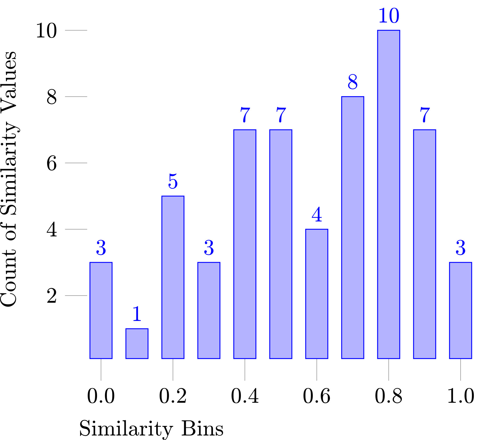

Das für die Evaluation verwendete Datenset ist das scientific dataset, welches auch in scisumm verwendet wird. Es ist auf github zur Verfügung gestellt:
https://github.com/WING-NUS/scisumm-corpus Das Set beinhaltet zehn Klassen mit jeweils einer Peer-Zusammenfassung und ist weiter unterteilt in Trainings-, Test- und Evaluations-Daten.
Da Sätze die kleinste Einheit von Sentence-Clustering darstellen, müssen sie erkannt werden. Das geschieht in diesem Fall durch das Python Modul SpaCy.
Es ist in der Lage Sätze schnell und zuverlässig in unterschiedlichen Sprachen zu erkennen.
Es kann zusätzlich POS-Tags erstellen sowie syntaktische Ähnlichkeiten und Named Entities erkennen.
Zum Erfolg von Sentence Clustering trägt das Preprocessing maßgeblich bei.
Da einige Algorithmen auch auf Wortebene vergleichen, und Satzabstands/-ähnlichkeits Maße oft auf Wortebene agieren, ist es notwendig den Korpus im Vorhinein zu bereinigen:
Der Satzabstand/Die Satzähnlichkeit wird berechnet durch einen simplen BOW Algorithmus bei dem Wort-Unigramme zweier Sätze verglichen werden:
\[ Sim(S_i,S_j) = \frac{ (2 \cdot |S_i \cap S_j|) }{ (|S_i| + |S_j|) } \]
Hier sind \(S_i, S_j\) die zwei Sätze, die verglichen werden sollen und \(|S_i|\) ist die Länge des Satzes i
Für jeden Satz des Input Dokumentes wird nun der Satzabstand zu jedem Cluster berechnet.
Der Satz wird zu dem Cluster hinzugefügt, der am 'stärksten' verbessert wird; falls kein Cluster ausreichend verbessert wird, erstellt der Algorithmus einen neuen Cluster der den Satz enthält.
Die Histogram-ratio wird für jeden Cluster gespeichert.
\[ {HR}_c = \frac{ \sum_{i=T}^{B} h_i} { \sum_{j=1}^{B} h_j} \]
Hier ist T das Threshold-Bin, B das höchste belegte Bin und \(h_i,h_j\) die Anzahl an Elementen in dem entsprechenden bin.

Die Sätze der einzelnen Dokumente werden mit Wertigkeit versehen, die sich aus 4 Features bildet:
\[ DF = w_1 + w_2 + ... + w_n \] \[ SRI = \cases{1 & if following sentence has pronoun ,\cr 0 & otherwise \cr}\]
CS ist die Anzahl an Matches von Synsets der Query zu einem Satz.
LF ist gewichtet nach der Position des Satzes im Dokument.
\[ SW = v \cdot DF + w \cdot LF + x \cdot SRI + y \cdot CS\]
Die Sätze werden dann mit dem maximalen Gewicht eines Dokumentes normalisiert.
Anschließend können die \(n\) am stärksten gewichteten Sätze extrahiert werden, ihre originale Position im Dokument wird dabei beibehalten.
Die daraus entstandenen Sätze werden dann mittels den folgenden Satzabstandsmaßen geclustert:
Syntaktische Ähnlichkeit:
Um die syntaktische Ähnlichkeit zu berechnen werden die zwei zu vergleichenden Sätze in Vektoren umgewandelt, welche dann ermöglichen die syntaktische Ähnlichkeit anhand der Werte der Vektoren zu berechnen.
\[ v0 (1): [1,2,3,4,5,6,7,8,9] \] \[ vr (2): [1,8,3,4,5,6,1,2,3] \]
Die syntaktische Ähnlichkeit kann dann als Kosinus-Koeffizient der beiden Vektoren berechnet werden.
Semantische Ähnlichkeit:
Die semantische Ähnlichkeit wird berechnet aus mehreren Faktoren:
Der kürzeste Pfad zwischen zwei Worten aus den zu vergleichenden Sätzen, basierend auf WordNet Hierarchie
Die Tiefe des ersten gemeinsamen Parents von beiden Wörtern in einem WordNet Graphen
Beide können dann vereint werden durch die Funktion:
\[ S_w(w_i,w_j) = \frac{f(d)}{f(d)+f(l)} \]
Der information content, der benötigt wird um die semantische Ähnlichkeit zweier Sätze zu berechnen, stellt sich wie folgt dar:
\[ I(w) = -\frac{\log p (w)}{(log N+1)} \]
Die Rekonstruktion der Sätze ist relativ simpel.
Da sie vor dem Preprocessing in einer separaten Liste gespeichert werden, kann einfach auf ihren Index zugegriffen werden und somit ist der Satz wiederhergestellt.
Da die Cluster in einer fixen Reihenfolge gespeichert werden, die nicht unbedingt der Reihenfolge der Sätze in einem Dokument entspricht, ist es notwendig, sie nach ihrer Relevanz zu ordnen.
Dafür stehen unterschiedliche Methoden zur Verfügung:
Ordnen nach Größe der Cluster
Log-count sorting
\[ W(C) = \displaystyle\sum_{w \in C} \log (1+\text{count}(w)) \;\;\;\;\;\;c > th \]
Hier ist \(W(C)\) das Gewicht eines Clusters, count(\(w\)) ist die Anzahl an Vorkommen, die das wort \(w\) im input besitzt.
Um die Sätze mit höchstem Informationsgehalt in die Zusammenfassung aufzunehmen, und die mit geringerem Informationsgehalt zu verwerfen, ist es notwendig den Informationsgehalt zu messen.
Dazu werden die folgenden Methoden vorgeschlagen:
| Document | ROUGE-1-R HR | ROUGE-1-R SD |
|---|---|---|
| NO1 | 0.196 | 0.366 |
| H89 | 0.354 | 0.388 |
| J00 | 0.203 | 0.236 |
| J98 | 0.363 | 0.321 |
| X96 | 0.446 | 0.250 |
| P98 | 0.255 | 0.277 |
| Average | 0.297 | 0.306 |